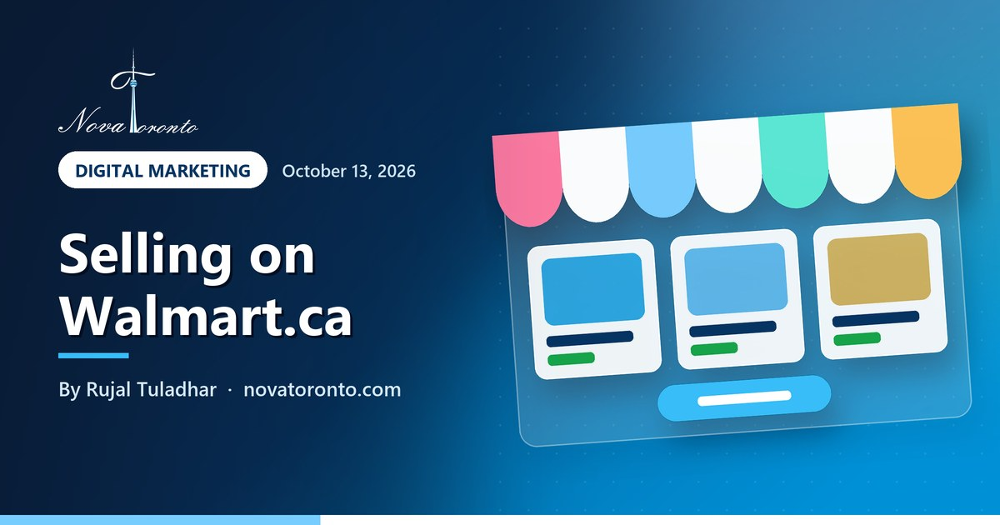

How to sell on Walmart Canada: approval, fees and payouts
Published October 13, 2026 • By Rujal Tuladhar

You already sell on Amazon.ca or your own Shopify store, and you keep hearing that Walmart.ca has less competition. It might. But Walmart Marketplace Canada is not an open sign-up like Amazon. You apply, Walmart verifies your business, and only then can your products go live.
This guide covers what Walmart asks for, how long each step takes, what it charges, how the money reaches you and when Walmart.ca is worth adding. Everything below comes from Walmart's own Canadian seller guides, checked on October 13, 2026. Where Walmart does not publish something, this post says so rather than guess.
Business number + ID
Plus proof of address and a return centre in Canada or the US
Up to 7+ days
Walmart's stated time for initial business verification
No sign-up fee
Referral fees of 6% to 20% by category, mostly 15%
Paid every 14 days
In CAD through Payoneer, PingPong or Airwallex
New-seller hold
Up to 14 days per order until 90 days and $1,000 in payments
How to sell on Walmart Canada: approval, fees and payouts at a glance — the short version.
What Walmart Canada asks for before you can sell
Walmart's Before you start selling guide lists the minimum requirements. Have these ready before you open the application:
- A business number: a federal or provincial business number, or a business tax identification number.
- Business details (legal business name, address, email, phone) entered exactly as they appear on your documents.
- Documents that prove your business name and address, such as a CRA Notice of Assessment, plus a utility bill or bank statement from the last six months.
- Photo ID: a driver's licence, passport or other government ID.
- Canadian tax registration numbers, if you have them, with a screenshot from the tax website.
- A return centre address in Canada or the United States for customer returns.
- Bank account information.
If you trade under a name in Ontario that is not your own, register it first. The Ontario Business Registry lists $60 for a sole proprietorship business name. GST/HST registration becomes mandatory once you pass $30,000 in taxable sales over four consecutive calendar quarters, according to the Canada Revenue Agency.
Walmart's public Canadian guides do not list a minimum sales history or other marketplace track record. They also do not publish how Walmart decides which applications to accept, so a clean, consistent application is the part you control.
How long Walmart Canada approval takes
Walmart's Canadian marketplace page tells sellers to apply for seller approval before they can list anything. Once you are in, its onboarding guide (updated January 5, 2026) sets out the steps:
- Create your account, accept the Seller Agreement and verify your email.
- Business verification: Walmart says the initial verification "can take up to +7 days".
- Payment setup: you have 30 days after submitting your business details. Miss it and your account is declined and you must re-apply.
- Store setup: market details, fulfilment method (Walmart Fulfillment Services or your own shipping) and shipping settings.
- Catalogue: add your items. Walmart says the account can take up to four hours to finalize after you add inventory.
Items can be published on Walmart.ca only once all of this is complete. Walmart does not publish a typical wait between applying and being invited to set up, so leave a few weeks in your launch plan.
Walmart.ca referral fees
Signing up is free. You pay a referral fee on each item sold, and Walmart's Canadian referral fee table (updated October 30, 2024) sets it by category:
- 15% for most categories, including Baby, Beauty, Health and Personal Care, Home and Garden, Kitchen, Pet Supplies, Toys and Everything Else.
- 12% for Automotive, Industrial and Scientific, Musical Instruments, and Tools and Home Improvement.
- 10% for Grocery, Gourmet Food, and Tires and Wheels.
- 8% for Consumer Electronics, Cell Phones, Camera and Photo, Major Appliances and Video Game Consoles.
- 6% for Personal Computers and 20% for Jewellery.
These fee categories come from the Retailer Agreement and do not match the categories you choose during item setup one-to-one. If you think an item is charged the wrong rate, Walmart asks you to open a case with the item ID.
For comparison, Amazon.ca charges $29.99 a month for its Professional plan, or $1.49 per item on the Individual plan, and 15% in Home and Kitchen and Everything Else. Walmart's published Canadian guides do not list a monthly subscription fee.
How Walmart Canada pays sellers
Walmart Canada does not deposit straight into your bank. Its payment setup guide says it works with Payoneer, PingPong and Airwallex, and you register with one of them. Payments are issued in Canadian dollars only. Your bank account must be in the same country your company is incorporated in. If the money goes to a non-Canadian account, it is converted and you pay the related fees. Check your provider's own fees before you choose one.
Timing, from the payments period guide:
- Payment periods are typically every 14 days and close at 11:59 p.m. Pacific time on alternating Fridays.
- Payment is sent by the 7th day after each period ends.
- New North American sellers face a New Seller Payment Hold of up to 14 days on each fulfilled order. It lasts until 90 days have passed since your first shipped order and you have received $1,000 in payments.
Walmart.ca or Walmart.com: which one for an Ontario seller?
They are separate marketplaces. Walmart.ca sells to Canadian shoppers and pays in CAD. Walmart.com is the US marketplace. Walmart began recruiting Canada-based businesses for it in 2022 and said it charged no setup, subscription or monthly fees, only a referral fee that varies by category, according to Retail Insider. Walmart's US payment processing guide (updated September 24, 2026) lists Payoneer, PingPong (Canada except Quebec) and Airwallex as available in Canada. Marketplace Wallet and PayPal are listed for the United States only.
For most Ontario businesses, Walmart.ca is the simpler start: no customs, Canadian shipping rates and a Canadian return address. Walmart.com reaches far more shoppers, but you have to deliver to US customers on time and handle cross-border shipping and returns.
When Walmart.ca is worth adding next to Amazon.ca or Shopify
Walmart.ca makes sense when your products already have barcodes (Walmart matches listings by UPC, EAN, GTIN or ISBN in its item setup guide), you can ship within your stated handling time, and you have a way to keep stock in sync. Walmart supports bulk upload, single-item setup and API integration, and its marketplace site describes a WooCommerce integration for bulk listing and inventory sync.
It is not worth it yet if you have only a handful of products, no barcodes, or no time to answer another channel's orders and returns. A marketplace you cannot keep up with hurts your seller performance on that marketplace.
The bottom line
Selling on Walmart Canada takes a business number, matching proof-of-address documents, a return address in Canada or the US and an account with Payoneer, PingPong or Airwallex. Business verification can take a week or more. There is no sign-up fee, referral fees are mostly 15%, and payouts arrive every 14 days, after a new-seller hold. For an Ontario business already selling well elsewhere, it is a sensible second or third channel.
If you want the application, catalogue setup and integration handled for you, see our Walmart Marketplace services. To compare costs across channels, read what it costs to start selling on Amazon.ca in 2026, the first-year cost of a Shopify store in Canada and Shopify vs WooCommerce costs. For AI help writing listings, try our free AI course for beginners.
Common questions
How long does Walmart Canada take to approve a seller?
Walmart does not publish a typical wait for the application itself. Once you are in Seller Center, it says initial business verification can take up to 7 days or more, you then have 30 days to set up payments, and the account can take up to four hours to finalize after you add inventory.
Does Walmart Canada charge a monthly fee to sell?
Walmart says signing up as a Walmart Marketplace Canada seller is free, and its published guides list no monthly subscription. You pay a referral fee on each item sold: 15% in most categories, from 6% for personal computers to 20% for jewellery.
How does Walmart Canada pay sellers?
Through Payoneer, PingPong or Airwallex, in Canadian dollars only. Payment periods are typically every 14 days, with payment sent by the 7th day after each period ends. New sellers have a hold of up to 14 days per order until 90 days have passed since the first shipped order and $1,000 has been paid out.
Do I need a business number to sell on Walmart Canada?
Yes. Walmart's checklist asks for a federal or provincial business number or a business tax identification number, with documents such as a Notice of Assessment and a recent utility bill or bank statement that verify your business name and address.
Want this working in your business?
Book a free 15-minute call and we'll map out which of these would actually save you time and win you customers.
Book a Free ConsultationNew to AI? Take our free 7-lesson AI course for beginners.
Sources: Walmart Marketplace Canada: Before you start selling • Walmart Marketplace Canada: Complete onboarding in Seller Center • Walmart Marketplace Canada: Commission or referral fees for contract categories • Walmart Marketplace Canada: Set up and update your payment info • Walmart Marketplace Canada: Payments period and reports • Walmart Marketplace Canada: Item setup methods overview • Walmart.ca: Sell easily on Walmart Canada Marketplace from your WooCommerce store • Walmart Marketplace (US): Payment processing • Retail Insider: Walmart recruits Canada-based sellers for its US marketplace (2022) • Amazon.ca: Selling fees (pricing) • Ontario.ca: Ontario Business Registry services and fees • Canada Revenue Agency: When to register for and start charging GST/HST